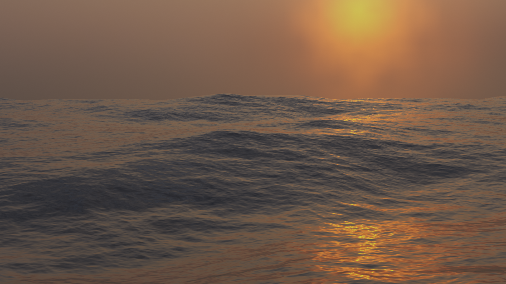
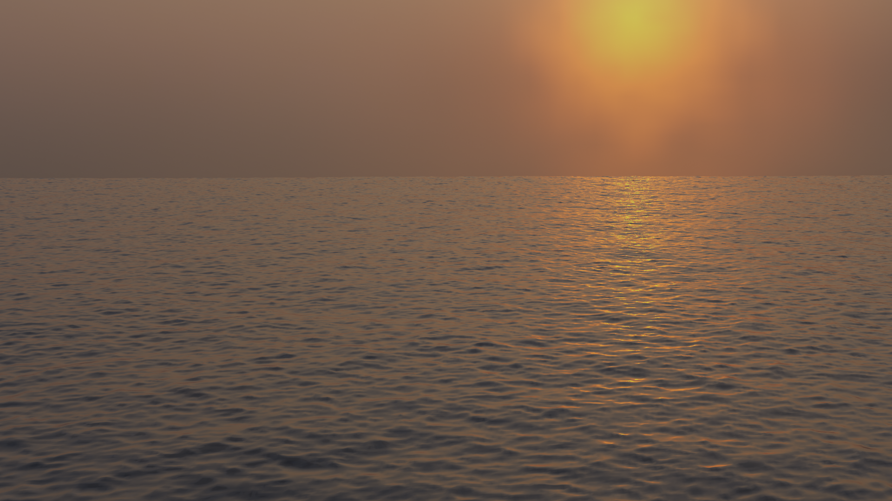
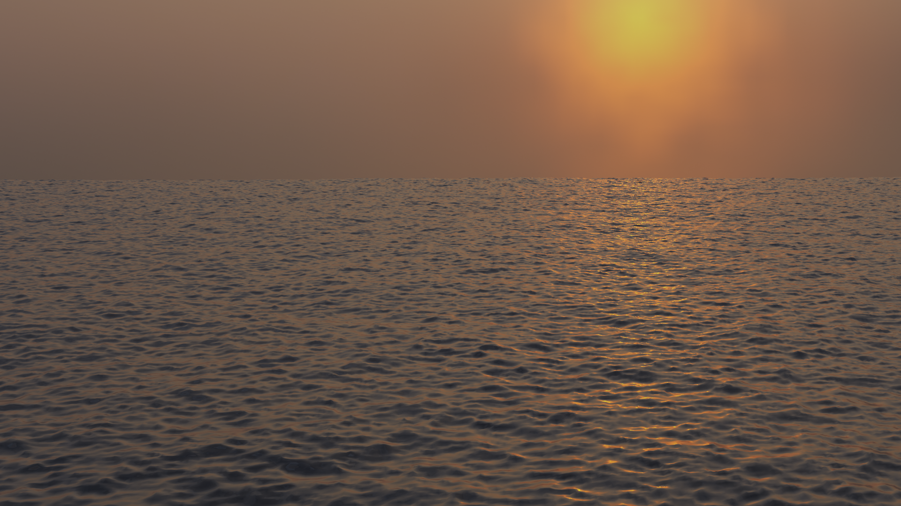

洋面修改器
洋面 修改器是一个海洋模拟工具，用于模拟和生成变形的海洋表面以及相关纹理，用于渲染模拟数据。它旨在模拟深海波浪和泡沫。
这是一个来自开放源码 Houdini Ocean Toolkit 的端口。
选项
{kind=link}
海洋修改器。
- 几何数据
- 生成
创建与模拟数据的分辨率完全对应的平铺网格栅格。
生成网格表面时，现有网格对象被海洋网格完全覆盖；这还包括从堆栈中的先前修改器生成的任何数据。还添加了一个 UV 通道，将（0.0 到 1.0）UV 空间映射到仿真网格。
- 重复 X、Y
控制网格在X和Y方向平铺的次数。这些平铺网格区域的UV值（0.0到1.0）延续出UV空间。
- 置换
使用现有几何体而不是替换它。顶点沿自身Z轴平移。
- 分辨率 视口、渲染
模拟引擎中质量与速度的主要控制。这决定了由 3D 视口或最终渲染的模拟生成的内部 2D 网格的分辨率。
内部网格是分辨率值的二次幂，因此分辨率值为
16，将创建大小为256×256的模拟数据。分辨率越高，产生的细节就越多，但计算得越慢。Note
使用 生成 修改器几何体选项时，此分辨率值还决定生成的网格曲面的分辨率，等于内部模拟数据的分辨率。
- 时间
海洋表面的解算时间。要创建一个海洋动画，需要 驱动 该值。时间值变化的速度将决定波浪动画的速度。
- 深度
即模拟区域下方的洋底的恒定深度。较低的值模拟较浅的水但是波浪更细密。
- 尺寸
一个简单的缩放因子，不影响波的高度或模拟的行为。
- 空间尺寸
模拟海洋表面区域的宽度，以米为单位。这也决定了生成的网格或位移区域的大小。当然，您可以在物体模式中的 海洋 修改器缩放对象，以调整场景中的外观尺寸。
- 随机种
不同的 随机种 将产生不同的模拟结果。
- 生成法线
模拟额外的法线地图数据。当映射到法线时，海洋纹理可以将其用作凹凸贴图，并允许在烘焙时生成法线贴图图像序列。
波浪
- 比例|缩放
这是对波幅的总体缩放控制。它能够通过正负值控制波浪的高度或深度。它不仅能够对洋面物体进行Z向缩放，而且可以对各个模拟面进行缩放，包括X与Y向的置换，以及对应的水沫与法线。
- 最小波浪
指定所生成波浪尺寸的下限。与低通滤波器功能相仿，这会将高频波浪的细节移除。
- 翻滚度
波峰的翻滚程度。当翻滚度值为0时，海洋表面只是在Z方向上做上下置换。而较高的翻滚度值则会让波浪产生X向与Y向的置换效果，来产生较为尖锐的波峰效果。
- 风速率
风速以米/秒为单位。风速较低时，表面会形成会相应较小的波浪。
- 对齐
由于风而形成的波浪的方向性。在值为 0 时，风和波浪是随机的，均匀定向的。当 对齐 值较高时，风以更恒定的方向吹动，使波看起来更加压缩并与单个方向对齐。
- 方向
当使用 对齐 时，波浪对齐到的角度方向（使用自身X轴作为参考）。
- 阻尼
当使用 对齐 时，这将定义相互反射波的阻尼量。这样做的效果是使波的运动更有方向性（不仅仅是波的形状）。
当 阻尼 为0.0时，波会在各个方向相互反射，当 阻尼 为1.0时，这些相互反射的波会被阻尼抵消掉，只留下沿风的方向传播的波。
泡沫
模拟其他泡沫数据。
这可以通过海洋纹理获取，用于纹理创建（可能作为遮罩），并允许在烘焙时生成泡沫映射图像序列。
- 数据层
顶点数据图层的可选名称，由海洋修改器用于将泡沫地图存储为颜色属性。这是在渲染器中访问泡沫数据所必需的。
- 范围
调整覆盖波浪的泡沫量，负值将减少泡沫量（仅留下最高的顶峰），正值将增加。通常其范围从 -1.0 到 1.0 。
将泡沫颜色属性与命名数据图层结合使用。
浪花
产生作为颜色属性的喷射方向图。这个地图可以用来定义喷雾粒子的速度。
- 浪花贴图
用于喷雾方向图的颜色属性的名称。
- 反转
反转喷雾方向图。
色谱
- 色谱
用来选择要使用的波谱模型。波谱是用来描述能量如何在不同频率的波浪中移动。能量通过波浪的方式不同，取决于水的深度和风速。
- 湍流海洋
用于创建带水沫的湍流海洋（Phillips）。
- 稳固大洋
用于大面积的、已建立的海洋，海洋将延伸数英里，风吹数日，使海浪达到平衡点（Pierson-Moskowitz法）。
- 稳固大洋（尖海浪）
然而，与常规的 已建立的海洋 相似，波浪会随着时间的推移继续增长，形成更尖锐的峰值（JONSWAP 和 Pierson-Moskowitz 方法）。一个额外的参数被用来定义这些峰值的尖锐度。
- 浅水
用于水深小于10米的浅水区，这使得它非常适合用于没有大风的小湖和池塘（JONSWAP和TMA--Texel-Marsen-Arsloe方法）。
不同光谱的例子，为每个光谱调整的设置。  湍流海洋。
 创建大洋。
 创建大洋（尖海浪）。

浅水。
- 尖海浪
一个人工因素，用于控制 既定海洋（尖峰） 和 浅水 频谱模型中波峰的尖锐程度。
- 吹程
与靠岸的距离，称为风向，或风以恒定速度吹过的距离。由 既定的海洋（尖峰） 和 浅水 光谱模型使用。
烘焙
与其实时模拟海洋数据，不如将数据烘焙到指定目录中的文件中。当模拟完成后，将完全绕过模拟器引擎，修改器/纹理将从烘焙文件中检索所有信息。
烘焙具有以下优势：
使用存储的数据比重新计算数据更快。
允许使用外部渲染器对海洋数据进行渲染。
允许使用更为高级的水沫贴图。
模拟数据作为 OpenEXR 图像映射的序列存储在硬盘上，每个图像映射对应位移，法线和泡沫（如果能够生成）。在从这些烘焙文件加载数据时，当从硬盘读取烘焙序列的帧时，它被缓存在内存中。这意味着随后访问加载的帧很快，不会产生硬盘访问的开销。
由于这些烘焙文件只是普通 OpenEXR，所以它们也可以在支持它们的任何其他应用程序或渲染器中打开和渲染。
- 缓存路径
烘焙的EXR文件的存储路径。序列格式为
disp_####.exr、normal_####.exr和foam_####.exr，这里的####代表四位数的帧数值。如果缓存路径文件夹不存在，将创建一个新的。- 起始帧、结束帧
用于烘焙模拟的帧范围（包括首尾）。当从烘焙范围外进行烘焙时，始帧与末帧将被重复执行烘焙操作。
- 水沫消退
烘焙还提供改进的泡沫能力。在实时模拟时，海洋模拟器仅检索当前帧的数据。在泡沫映射的情况下，这代表给定帧的波峰顶端。实际上，在通过波浪相互作用产生泡沫之后，它会在波浪表面的顶部保持一段时间，因为它会消散。通过烘焙，可以通过累积前一帧中的泡沫使其保持在表面上来近似该行为。
例子
下面的例子是在Blender中创建和渲染的，注意到波浪的峰顶是白色的；这是由泡沫数据产生的效果。